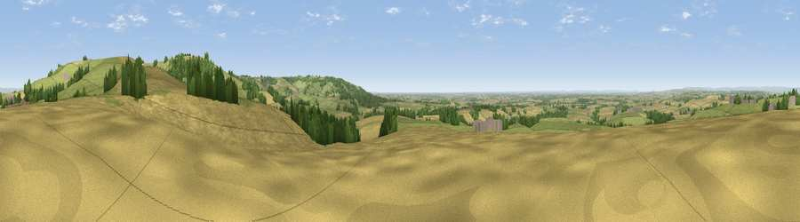

Viewpoint near Acklam
#6474 in England · top 7% of its area beats it · near AcklamWhere it is
The exact computed spot (SE 78388 60712). Click the marker for map links.
The view, rendered

A 360° render of this exact spot computed from the terrain model, tree cover and land cover — summer colours, afternoon light, calibrated against photographs of famous viewpoints. Real trees, hedges and buildings will differ in detail.
The panorama
Grey silhouette: terrain skyline in each direction (720 bearings, Earth curvature and refraction included). Dashed green: skyline with trees (+15 m) and buildings (+8 m) as obstacles. Blue strip: how far the ground is visible on each bearing.
Where the view opens
Wedge length = distance to the farthest visible ground on that bearing (vegetation-aware). Rings at 10, 25 and 50 km.
What fills the view
45% cropland · 41% grassland · 12% woodland ·
Angular shares of the visible panorama (visual magnitude), not map area. Landscape diversity 0.45 (0–1 Shannon).
Key numbers
More beautiful places nearby
The staircase of upgrades: each row has a higher view potential than everything closer. Driving times are estimates from straight-line distance, calibrated against real road routing — check an actual route before setting out.
| Place | Direction | Drive | Score |
|---|---|---|---|
| Viewpoint near Acklam | ENE · 1 km | ~4 min | 72.0 |
| Viewpoint near Acklam | E · 2 km | ~4 min | 73.8 |
| Viewpoint near Ampleforth | NW · 26 km | ~42 min | 76.6 |
| Viewpoint near Kilburn | NW · 34 km | ~52 min | 79.3 |
| Hood Hill | NW · 35 km | ~53 min | 79.6 |
| Viewpoint near Thirlby | NW · 36 km | ~54 min | 81.5 |
| Viewpoint near Ravenscar | NNE · 45 km | ~65 min | 87.3 |
| Viewpoint near Ravenscar | NNE · 45 km | ~65 min | 90.0 |
54.03645, -0.80460 · source: screening · position refined by local search. Computed location — check access rights before visiting.